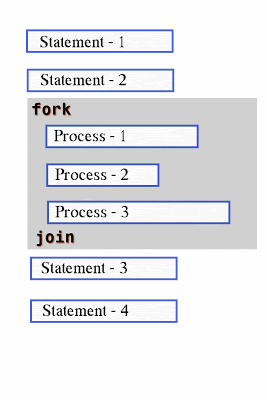

✅ fork...join in SystemVerilog
fork...join is a construct used to start multiple processes (or threads) in parallel and wait until all of them complete before moving to the next line of code.

It's commonly used when tasks need to run simultaneously, but you want to wait for all of them to finish before proceeding.
🔹 Simple Example: fork...join
module fork_join_example;
initial begin
$display("Simulation started at time %0t", $time);
fork
#5 $display("Process 1 done at time %0t", $time);
#10 $display("Process 2 done at time %0t", $time);
join
$display("All processes done at time %0t", $time);
end
endmodule
💡 What Happens:
- Both Process 1 and Process 2 start at time 0.
- Process 1 ends at time 5, Process 2 ends at time 10.
- Only after both are done, the last message is printed.
🔹 Nested Example: fork...join
module nested_fork_join;
initial begin
$display("Simulation started at time %0t", $time);
fork
begin
$display("Outer Process 1 started at %0t", $time);
#10 $display("Outer Process 1 done at %0t", $time);
end
fork
#5 $display("Inner Process A done at %0t", $time);
#7 $display("Inner Process B done at %0t", $time);
join
join
$display("All outer processes done at time %0t", $time);
end
endmodule
💡 What Happens:
- Two main processes start in parallel:
- One long outer task (10 units).
- One nested
fork...joinwith two shorter tasks (5 and 7 units). - Simulation waits for all tasks, including inner ones, to complete.
🔹 Real-Life Analogy: Organizing a Birthday Party 🎉
Imagine you're organizing a birthday party and you delegate tasks to your friends:
- 🍰 Friend A bakes the cake (2 hours)
- 🎈 Friend B decorates the room (1 hour)
- 🎁 Friend C wraps the gifts (1.5 hours)
You use a fork...join approach when you say:
“Let’s all start our tasks at the same time, and we’ll only start the party when everyone is done!”
All tasks begin in parallel. The party doesn’t begin until the last person finishes.
That’s how fork...join works—parallel start, wait for all to finish.